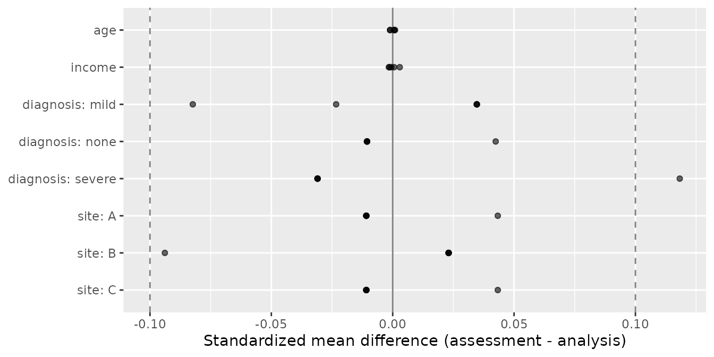

This article walks through a modeling project with balancesample: a balanced training/testing split, balanced folds on the training set, tuning with tune, and a final fit. It also shows how to choose the columns to balance, how to check the result, and how to choose a method.
The data
The example uses simulated data from 300 patients at three sites. Age and income are skewed, and diagnosis has a rare level. The outcome depends on age, income, and diagnosis.
library(balancesample)
set.seed(2026)
n <- 300
d <- data.frame(
age = rgamma(n, shape = 4, rate = 0.1),
income = rlnorm(n, meanlog = 10, sdlog = 0.6),
diagnosis = factor(sample(c("none", "mild", "severe"), n, TRUE, prob = c(0.6, 0.3, 0.1))),
site = factor(sample(c("A", "B", "C"), n, TRUE))
)
d$outcome <- 0.05 * d$age + 0.3 * log(d$income) + 1.5 * (d$diagnosis == "severe") + rnorm(n)Why balance?
rsample::vfold_cv(strata = diagnosis) keeps the mix of
diagnoses about the same in every fold. Suppose you also want every fold
to have similar ages, incomes, and sites. With 300 rows and 10 folds,
each held-out fold has only about 30 rows, so random folds can differ
quite a bit from the rest of the data.
balance_check() measures this with the standardized mean
difference (SMD). For each fold, it takes the held-out rows minus the
other rows: the difference in means for a numeric variable, or in
proportions for each level of a categorical variable. It then divides by
the pooled standard deviation. An absolute SMD under 0.1 is a common
rule of thumb for good balance. This helper keeps the largest absolute
SMD in each fold:
worst_smd <- function(check) {
smd <- check[check$statistic == "smd", ]
tapply(abs(smd$value), smd$id, max)
}Here are ordinary folds from rsample. For these, you list the columns to check:
random_folds <- rsample::vfold_cv(d, v = 10, strata = diagnosis)
random_smd <- worst_smd(balance_check(random_folds, age, income, diagnosis, site))
round(random_smd, 2)
#> Fold01 Fold02 Fold03 Fold04 Fold05 Fold06 Fold07 Fold08 Fold09 Fold10
#> 0.35 0.17 0.16 0.24 0.19 0.20 0.11 0.58 0.53 0.26And here are balanced folds. balance lists the columns
to make similar, and exact takes the place of
strata. The next section explains both. Balanced folds
remember these columns, so balance_check() needs no column
list:
folds <- balanced_vfold_cv(d, v = 10, balance = c(age, income, site), exact = diagnosis)
balanced_smd <- worst_smd(balance_check(folds))
round(balanced_smd, 2)
#> Fold01 Fold02 Fold03 Fold04 Fold05 Fold06 Fold07 Fold08 Fold09 Fold10
#> 0.05 0.05 0.05 0.05 0.05 0.05 0.05 0.05 0.05 0.05The largest absolute SMD in any fold fell from 0.58 to 0.055. What is left is mostly in the category proportions. These can’t come out exactly equal when a level’s count doesn’t divide evenly into 10 folds.
Choosing columns: balance and exact
balance takes numeric and categorical columns. Numeric
columns are standardized, and categorical columns become one 0/1 column
per level. The method then makes the sets as similar as it can on all of
these columns at once. This is a goal, not a rule, so the method may
trade a little balance on one column for more balance on another.
exact takes categorical columns and is a rule. Each
combination of levels is one stratum. In each set, the count of each
stratum is its share of that set, rounded up or down to a whole row.
This is fixed before the method runs, so it holds for every method.
exact does the job of strata in rsample,
with two differences. It can take several columns, which it crosses, and
its counts are exact rather than approximate. If you write
strata out of habit, balancesample stops and tells you to
use exact.
A categorical column can go in either argument. Use
exact when you need the counts as close as whole rows
allow. Use balance when close is enough. In the folds
above, diagnosis is in exact because the outcome depends on
it, and severe cases are rare. Site is in balance because a
slightly uneven mix of sites is fine. Continuous columns belong in
balance. If you need exact counts within ranges of a
continuous column, make a factor with cut() and put that in
exact.
Each column you add to exact splits the strata further.
Here diagnosis and site together make 9 strata:
tab <- table(d$diagnosis, d$site)
tab
#>
#> A B C
#> mild 24 33 27
#> none 68 43 65
#> severe 15 10 15The smallest stratum is severe cases at site B, with 10 patients. After an 80% training split, 8 of them are spread over 5 folds, so each fold gets 1 or 2. A stratum with fewer rows than folds is missing from some folds. Small strata also leave the method less room to balance the other columns.
A full tidymodels workflow
Start with a balanced training/testing split. This time, site goes in
exact too, so that every site is represented in proportion
in the test set. Then make balanced folds from the training set only, so
the test set plays no part in tuning.
split <- balanced_initial_split(d, prop = 0.8, balance = c(age, income), exact = c(diagnosis, site))
train <- rsample::training(split)
balance_check(split)
#> # Balance check: 1 split, max |SMD| = 0.0367, mean energy distance = 0.0313
#> # A tibble: 9 × 5
#> id variable level statistic value
#> <chr> <chr> <chr> <chr> <dbl>
#> 1 Split age NA smd -0.000568
#> 2 Split income NA smd 0.000255
#> 3 Split diagnosis mild smd 0.00927
#> 4 Split diagnosis none smd -0.00846
#> 5 Split diagnosis severe smd 0
#> 6 Split site A smd -0.0174
#> 7 Split site B smd 0.0367
#> 8 Split site C smd -0.0174
#> 9 Split NA NA energy 0.0313The last row is the energy distance. It compares the whole joint distribution of the checked columns in the two sets, so it also picks up differences in spread and shape that the SMD misses. It is 0 when the two sets have the same distribution, and smaller is better. Use it to compare splits of the same data on the same columns. Its size has no fixed cutoff like 0.1.
folds <- balanced_vfold_cv(train, v = 5, balance = c(age, income), exact = c(diagnosis, site))Use autoplot() to see the SMD of every variable in every
fold. The dashed lines are at -0.1 and 0.1.
library(ggplot2)
autoplot(balance_check(folds))
A diagnosis level can land outside the lines even though diagnosis is
in exact. The counts are exact for each diagnosis and site
combination. A fold can be one row off in each of the three sites, and
these rows add up for the diagnosis as a whole. Rare levels show this
most, because one row is a large share of a small level.
The folds work with tune like any other rset. Attach
balancesample with library() before tuning. tune finds the
function that made the folds by its name, so it fails if you only call
balancesample::balanced_vfold_cv().
This example tunes the depth and the minimum node size of a decision tree:
library(tune)
library(parsnip)
library(workflows)
wf <- workflow(
outcome ~ age + income + diagnosis + site,
decision_tree(tree_depth = tune(), min_n = tune(), mode = "regression")
)
res <- tune_grid(wf, resamples = folds, grid = 6)
show_best(res, metric = "rmse", n = 3)
#> # A tibble: 3 × 8
#> tree_depth min_n .metric .estimator mean n std_err .config
#> <int> <int> <chr> <chr> <dbl> <int> <dbl> <chr>
#> 1 12 9 rmse standard 1.15 5 0.0333 pre0_mod5_post0
#> 2 9 24 rmse standard 1.15 5 0.0379 pre0_mod4_post0
#> 3 6 2 rmse standard 1.15 5 0.0435 pre0_mod3_post0Finalize the workflow with the settings that had the lowest
cross-validated RMSE. Then last_fit() fits it on the whole
training set and evaluates it on the test set:
final <- finalize_workflow(wf, select_best(res, metric = "rmse"))
final_fit <- last_fit(final, split)
collect_metrics(final_fit)
#> # A tibble: 2 × 4
#> .metric .estimator .estimate .config
#> <chr> <chr> <dbl> <chr>
#> 1 rmse standard 1.30 pre0_mod0_post0
#> 2 rsq standard 0.336 pre0_mod0_post0Choosing a method
balancesample has four methods. "anticlust" (the
default) and "twinning" need the anticlust and twinning
packages. "rerandomize" and "interaction" need
no extra packages. This compares all four on the full data with 10
folds:
methods <- c("anticlust", "twinning", "rerandomize", "interaction")
summary_by_method <- lapply(methods, function(m) {
f <- balanced_vfold_cv(d, v = 10, balance = c(age, income, site), exact = diagnosis, method = m)
check <- balance_check(f)
data.frame(
method = m,
worst_smd = max(worst_smd(check)),
mean_energy = mean(check$value[check$statistic == "energy"])
)
})
by_method <- do.call(rbind, summary_by_method)
by_method[-1] <- round(by_method[-1], 3)
by_method
#> method worst_smd mean_energy
#> 1 anticlust 0.055 0.056
#> 2 twinning 0.163 0.035
#> 3 rerandomize 0.356 0.103
#> 4 interaction 0.799 0.116In this run, anticlust had the smallest worst SMD (0.055), and twinning had the smallest mean energy distance (0.035). These come from one run of each method, so treat small differences as noise.
Start with anticlust. Its run time grows quickly with the number of
rows. On large data, set options = list(k_neighbours = 20)
or try twinning, then check the balance again. The README lists run
times for both. Use rerandomize if you can’t install the extra packages.
interaction is a baseline that shows how crossed strata become sparse.
See ?balanced_vfold_cv for the options of each method.
Groups
If the data have several rows per person, put the person ID in
group. All of a person’s rows then go to the same set.
Columns in exact must be constant within each person, and
the exact counts are counts of people, not rows. group
works the same way in balanced_initial_split().
d$person <- seq_len(n)
long <- d[rep(seq_len(n), times = sample(1:4, n, TRUE)), ]
grouped <- balanced_vfold_cv(long, v = 5, balance = c(age, income), exact = diagnosis, group = person)
grouped
#> # 5-fold balanced cross-validation (anticlust), stratified by diagnosis, grouped by person
#> # A tibble: 5 × 2
#> splits id
#> <list> <chr>
#> 1 <split [590/148]> Fold1
#> 2 <split [590/148]> Fold2
#> 3 <split [591/147]> Fold3
#> 4 <split [590/148]> Fold4
#> 5 <split [591/147]> Fold5The split sizes are numbers of rows. Each fold gets about the same
number of people, so the number of rows per fold varies with how many
rows each person has. balance_check() also compares
rows.